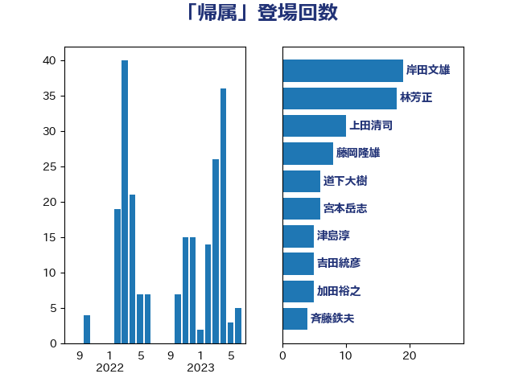

単語「帰属」

| 岸田文雄 | 自由民主党 | 19 回 |
| 林芳正 | 自由民主党 | 18 回 |
| 上田清司 | 国民民主党 | 10 回 |
| 藤岡隆雄 | 立憲民主党 | 8 回 |
| 道下大樹 | 立憲民主党 | 6 回 |
| 宮本岳志 | 日本共産党 | 6 回 |
| 津島淳 | 自由民主党 | 5 回 |
| 吉田統彦 | 立憲民主党 | 5 回 |
| 加田裕之 | 自由民主党 | 5 回 |
| 斉藤鉄夫 | 公明党 | 4 回 |
| 小沢雅仁 | 立憲民主党 | 4 回 |
| 宮本徹 | 日本共産党 | 4 回 |
| 守島正 | 日本維新の会 | 4 回 |
| 鈴木俊一 | 自由民主党 | 3 回 |
| 若松謙維 | 公明党 | 3 回 |
| 田村貴昭 | 日本共産党 | 3 回 |
| 本庄知史 | 立憲民主党 | 3 回 |
| 吉良州司 | 無所属 | 3 回 |
| 齋藤健 | 自由民主党 | 2 回 |
| 大野敬太郎 | 自由民主党 | 2 回 |
| 堀場幸子 | 日本維新の会 | 2 回 |
| 和田政宗 | 自由民主党 | 2 回 |
| 伊藤岳 | 日本共産党 | 2 回 |
| 井坂信彦 | 立憲民主党 | 2 回 |
| 高橋英明 | 日本維新の会 | 1 回 |
| 高橋千鶴子 | 日本共産党 | 1 回 |
| 阿部司 | 日本維新の会 | 1 回 |
| 金子道仁 | 日本維新の会 | 1 回 |
| 金子恭之 | 自由民主党 | 1 回 |
| 野田佳彦 | 立憲民主党 | 1 回 |
| 萩生田光一 | 自由民主党 | 1 回 |
| 田島麻衣子 | 立憲民主党 | 1 回 |
| 玉木雄一郎 | 国民民主党 | 1 回 |
| 浜口誠 | 国民民主党 | 1 回 |
| 河野太郎 | 自由民主党 | 1 回 |
| 櫻井周 | 立憲民主党 | 1 回 |
| 橋本岳 | 自由民主党 | 1 回 |
| 柴愼一 | 立憲民主党 | 1 回 |
| 柳本顕 | 自由民主党 | 1 回 |
| 志位和夫 | 日本共産党 | 1 回 |
| 広瀬めぐみ | 自由民主党 | 1 回 |
| 岩渕友 | 日本共産党 | 1 回 |
| 山本博司 | 公明党 | 1 回 |
| 小熊慎司 | 立憲民主党 | 1 回 |
| 小池晃 | 日本共産党 | 1 回 |
| 小林鷹之 | 自由民主党 | 1 回 |
| 大島敦 | 立憲民主党 | 1 回 |
| 大塚耕平 | 国民民主党 | 1 回 |
| 大口善徳 | 公明党 | 1 回 |
| 城内実 | 自由民主党 | 1 回 |
| 勝部賢志 | 立憲民主党 | 1 回 |
| 加藤勝信 | 自由民主党 | 1 回 |
| 仁木博文 | 無所属 | 1 回 |
| 中田宏 | 自由民主党 | 1 回 |
| たがや亮 | れいわ新選組 | 1 回 |
| あべ俊子 | 自由民主党 | 1 回 |